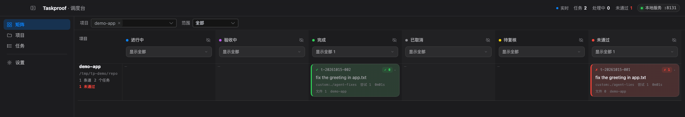

A conveyor belt for AI coding agents.
给 AI 编码 agent 用的传送带。
It does not decide what to do. It guarantees that whatever gets dispatched is independently verified and recorded — so you never have to trust an agent's own claim that it finished.
它不决定做什么。它保证派出去的活被独立验收并记账 —— 从此不必相信 agent 自称"已完成"。
How it works
怎么运转
A brief plus the command that will decide it. That command is the only thing believed.
一段任务 + 裁决它的命令。只有这条命令算证据。
It runs on a lane: your choice of codex, claude, gemini, opencode — or custom:<shell command>.
落在一条道上跑：codex / claude / gemini / opencode，或 custom:<任意命令>。
Either way it is recorded: what changed, the verdict, the full event stream. Local SQLite.
无论成败都记账：真实改动、裁决、完整事件流，本地 SQLite。
What the ledger holds
账本里有什么

| Recorded记录项 | Why it matters为什么重要 |
|---|---|
| change surface改动面 | “it changed 0 files” is a fact, not an opinion."它改了 0 个文件"是事实，不是观点。 |
| verdict裁决 | An acceptance command, never the agent's summary. “Did not run” is never recorded as “passed”.验收命令说了算，不是 agent 的自述；"没跑"永远不会记成"通过"。 |
| event stream事件流 | Every run is auditable afterwards, including which budget stopped it.每次运行事后可审计，包括是哪个预算把它停下的。 |
Install
安装
# command line
pipx install taskproof
# latest development version
# pipx install git+https://github.com/HaoHaoP/taskproof
# desktop console (macOS / Windows / Linux)
# installers live on the Releases pagePython 3.11+, standard library only, no API keys, no LLM inside the tool itself — the judge must not be another model.
Python 3.11+，只用标准库，无需 API key，工具内部不含 LLM —— 判官不能是另一个模型。